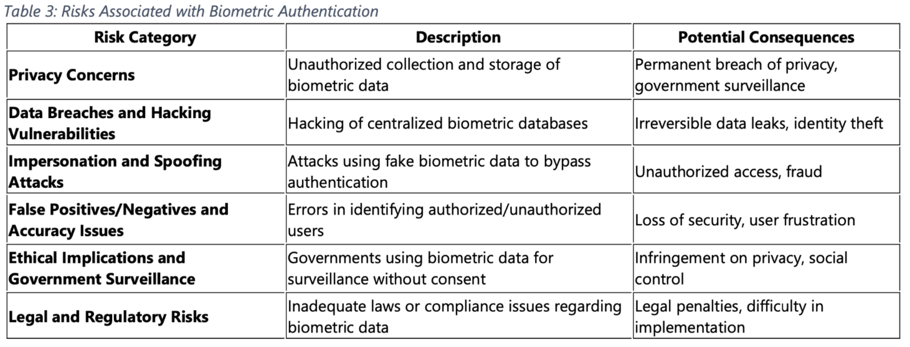

Biometric data offers a secure and user-friendly identification process using the physiological and behavioural characteristics of an individual. Although this fast-growing technology is beneficial, along with the benefits comes many risks including data breaches, impersonation and spoofing attacks, false positives/negatives, and accuracy issues1 (Malik, 2024).
One of the biggest risks is that, unlike passwords, patterns, or pins, biometric information cannot be changed once it is stolen. Malik (2024) describes when biometric data is leaked in a data breach, the person whose data was stolen cannot simply rest their fingerprint or facial recognition. It is easy for cybercriminals to steal sensitive biometric information when the biometric system is vulnerable during setup if they use weak encryption or transfer data in unsecured ways. Hackers who have access to government biometric databases may misuse these stolen identities for identity theft to make fraudulent transactions, or to enter secured areas by through a stolen identity. The consequence of a compromised password is a something that may be reset, however, ”biometric data is something that, once exposed, can never be changed” (Siddique et al., 2017). This demonstrates how the misuse of biometric data is more permanent and sensitive compared to other types of login methods.
Biometric systems are also at risk of spoofing attacks and impersonation, which can weaken their security. As technology has evolved, it has become easier for cybercriminals to fool the authentication system. For example, fingerprint scanners can be deceived using fake prints made from gelatin or silicone materials. Similarly, facial recognition can be fooled by images, videos, or 3D replicas of an individual's face (Chingovska et al. 2016).
Additionally, biometric systems face issues with accuracy. Situations may occur where they provide an unauthorised individual access, false positives, or lock out or deny access to an authorised individual, false negative (Malik., 2024). Factors such as dim lighting, dirt, moisture, or low-quality sensors can impact how accurate a biometric system function (Neto et al. 2016). For instance, facial recognition may not perform properly if an individual is wearing glasses or a fingerprint scanner has a risk of misidentifying a fingerprint if the user’s hands are wet. These situations can be frustrating for user’s and may result in a lack of trust in the system, or in more dire situations, a loss of security, resulting in major problems for organisations.
Biometric authentication also comes with privacy, ethical, and legal risks. Individuals are often unaware of how their biometric data is being collected, stored, and shared, or they may not have been given proper consent. Malik (2024) emphasises that, biometric systems can be misused without clear laws or strong protection, especially in public places where facial recognition may be used for surveillance. This raises important questions about how much control people really have over their personal information, and whether the information that they have given consent to is being utilised by the government or companies responsibly.
Although the advancement of biometric data has made security and authentication more efficient, it raises concerns on whether it is more reliable as it comes with major risks, including data breaches, impersonation, and technical issues that may impact a user’s access and safety. Due to the inability to change biometric traits and characteristics, extra security needs to be enforced when handling this information, as is more high risk than passwords. It is important for organisations to create secure systems and for laws to be put in place for the protection of users and their data.
thanks to W3C for tutorial and adapted code from Style Examples
also thanks to WDN for HTML and CSS resources and any adapted code snippets from Mozilla Developer Network